30 关中，2 关沿用已验收版本，26 关已通过结构和机器人粗筛、等待人工试玩。当前新增：5、8、10、14、15、19、20、23、24、26、27、29、30、31 关。
保留题材与原检查门槛，待本轮结果更新。
四种策略均获胜，但B用时明显更长，集中试玩时需关注实际节奏。
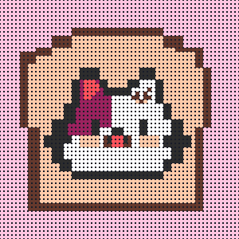
原关 A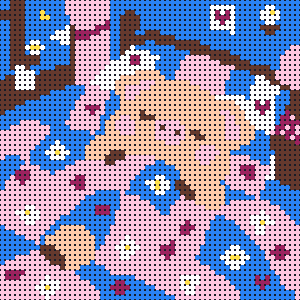
转换后的新图 B10-28 新图（花被子小猪）：调排队后差距0.19，B 略难（难度分 2.5→3），用户放行。
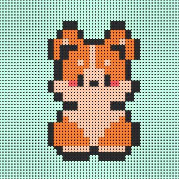
原关 A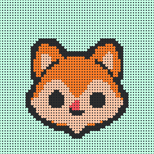
转换后的新图 B保留题材与原检查门槛，待本轮结果更新。
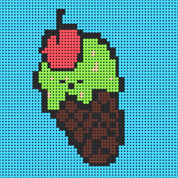
原关 A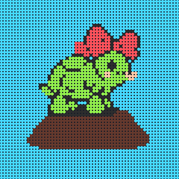
转换后的新图 B10-27 排队微调（上限6位）：验证差距0.40→0.10，原来新图偏难。（需重新打测试包后才是新版本）
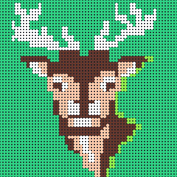
原关 A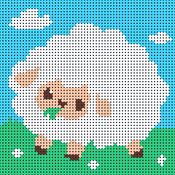
转换后的新图 B10-27 重画新图（大绵羊），调排队后验证差距0.05。（需重新打测试包后才是新版本）
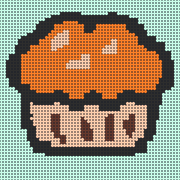
原关 A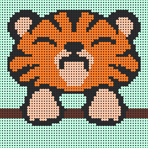
转换后的新图 B内置建议两边胜率92%/100%且大多需复活；其余三种策略两边均输，仍需人工确认堵位节奏。
原关 A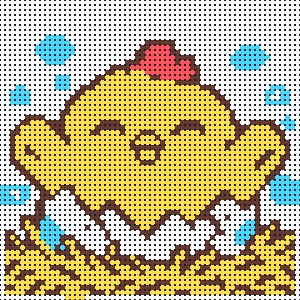
转换后的新图 B 10-26 20:27 排队微调：图不变，换位9名队员（前后最多3位）。无界面模拟验证与原关差距0.69→0.08。（需重新打测试包后才是新排队）
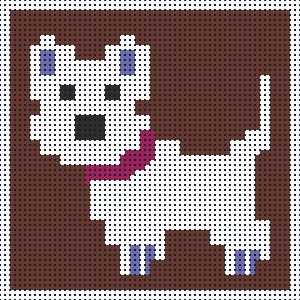
原关 A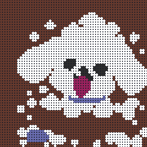
转换后的新图 B内置建议复活率50%→92%；优先攻击胜率83%→58%，集中试玩重点关注是否更依赖复活。
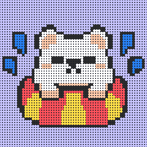
原关 A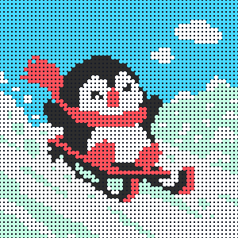
转换后的新图 B10-27 试点新图：雪橇小企鹅（-13），换色 + 沙流补偿，画面零改动；调排队后验证差距0.42→0.14。（需重新打测试包后才是新版本）
原关 A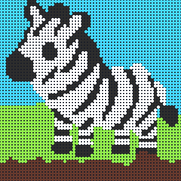
未通过的转换草稿 第5轮图转换通过，但机器人某打法复活率由100%变为0%，难度超差。第6轮两张图仍需补齐181/258格，超过150格；尚未进入试玩包。
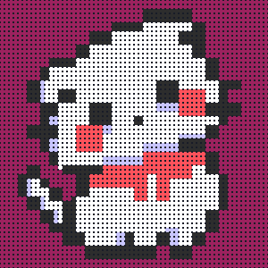
原关 A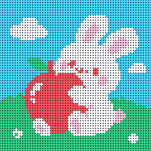
转换后的新图 B10-27 新图，用户接受（验证差距0.24）。（需重新打测试包后才是新版本）
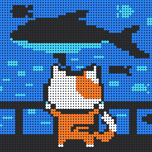
原关 A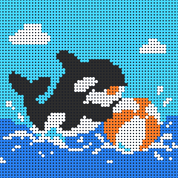
转换后的新图 B10-27 新图，用户放行（验证差距0.18）。（需重新打测试包后才是新版本）
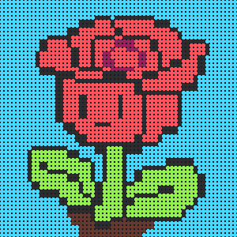
原关 A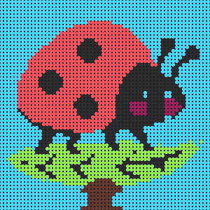
未通过的转换草稿第6轮横叶排布保住触角、叶片和脚部，补齐42格；但内置建议胜率50%→100%、优先攻击25%→100%，明显偏容易，尚未进入试玩包。
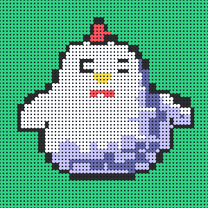
原关 A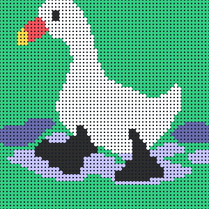
转换后的新图 B10-27 排队微调：验证差距0.38→0.12。（需重新打测试包后才是新版本）
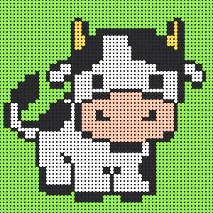
原关 A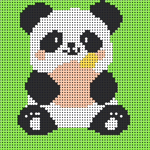
转换后的新图 B四策略A/B胜率均100%；B内置建议12局中1局复活，其余均无复活，用时接近。
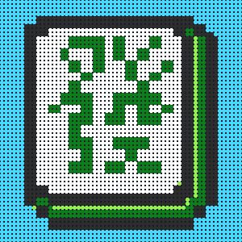
原关 A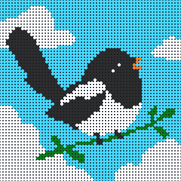
转换后的新图 B10-27 重画新图，用户放行（验证差距0.20）。（需重新打测试包后才是新版本）
原关 A转换后的新图 B
本轮新增。改用第12图原朝向，补齐65格，4种打法均通过粗筛。部分打法卡住时长明显短于原关，试玩时重点比较是否过于顺畅。
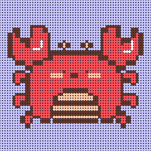
原关 A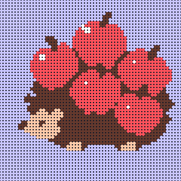
转换后的新图 B保留题材与原检查门槛，待本轮结果更新。
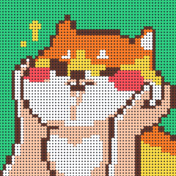
原关 A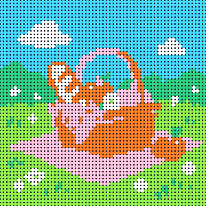
转换后的新图 B10-27 用户选定新图 -09（粉格布、橙篮子），排队微调后验证差距0.07。（需重新打测试包后才是新版本）
原关 A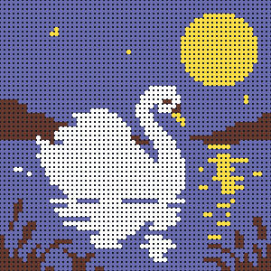
转换后的新图 B 10-27 新图重新生成并调排队：验证差距0.06。（需重新打测试包后才是新版本）
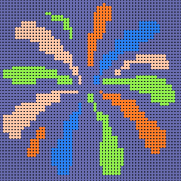
原关 A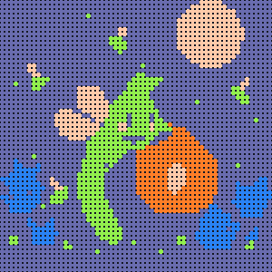
转换后的新图 B10-26 20:27 排队微调：图不变，换位12名队员（前后最多3位）。验证差距1.35→0.13，原来新图明显偏容易。（需重新打测试包后才是新排队）
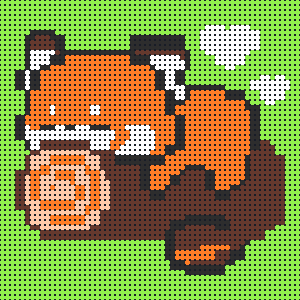
原关 A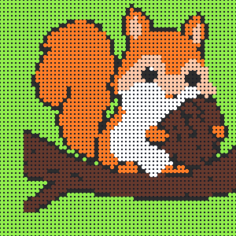
转换后的新图 B 10-26 20:27 排队微调：换位8名，验证差距0.25→0.14。（需重新打测试包后才是新排队）
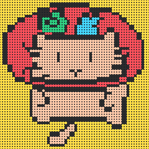
原关 A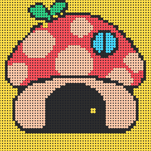
转换后的新图 B10-26 21:29 排队微调：图不变，换位10名队员（前后最多3位）。验证差距0.32→0.08，原来新图偏难。（需重新打测试包后才是新排队）
第 27 关大胡萝卜
本轮新增 · 待试玩 · 重点复核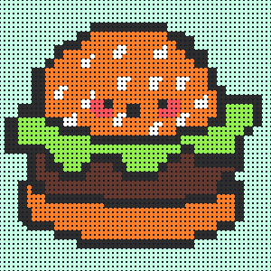
原关 A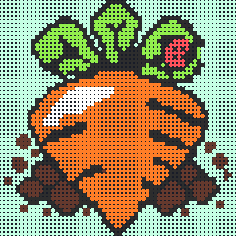
转换后的新图 B10-26 21:29 排队微调：图不变，换位4名队员（前后最多3位）。验证差距0.34→0.05，17:40 撤下时的清除进度差距已消除。（需重新打测试包后才是新排队）
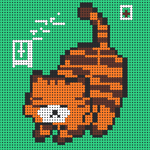
原关 A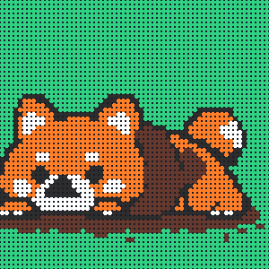
转换后的新图 B四种策略两边均获胜，但内置建议中位用时53→96秒、优先清位82→135秒；需人工重点比较是否拖慢关卡节奏。
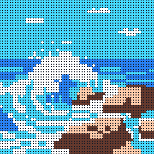
原关 A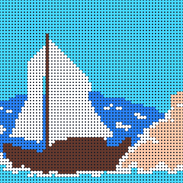
转换后的新图 B本轮新增。船头船尾完整；补齐123格，4种打法均通过粗筛。部分打法卡住时长高于原关，重点比较后半段堵位和补给节奏。
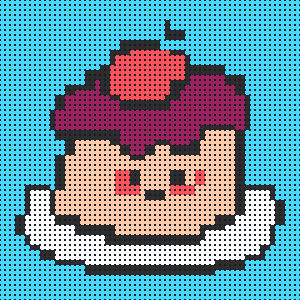
原关 A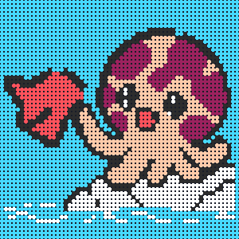
转换后的新图 B本轮新增。保住触手和脸部，补齐50格，4种打法均通过粗筛。原关与新图在机器人下的胜率都偏低，仍需人工确认可玩性。 10-26 20:27 排队微调：换位2名，验证差距0.17→0.09。（需重新打测试包后才是新排队）
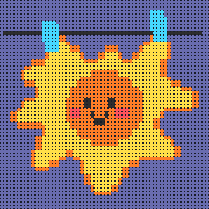
原关 A转换后的新图 B10-27 第二次重画（大篝火+小兔子），用户放行（验证差距0.165）。（需重新打测试包后才是新版本）
原关 A转换后的新图 B
10-26 20:20 排队微调：换位2名，验证差距0.34→0.06。（需重新打测试包后才是新排队）